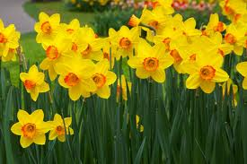

Jonquille et Narcisse

Jonquille et Narcisse (Narcissus spp. de la famille des Amaryllidacées)
Très toxique par ingestion.
Partie toxique pour les chats en général et le Korat en particulier :
Feuilles et bulbes.
Symptômes du processus pathologique :
Salivation, vomissements, diarrhée. Rarement, des symptômes nerveux (sédation, convulsions) et cardiovasculaires (hypotension, ralentissement cardiaque) peuvent apparaître.
Origine de la toxicité (principe actif) :
Plusieurs alcaloïdes dont la lycorine et la narcissine et des saponosides.